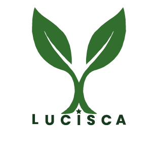

Stratégie & gestion de projets
Structurer une idée numérique, définir ses priorités et garder le cap.
Clarification des objectifs, planification, coordination et suivi de l’avancement.
Référent digital · Parakou, Bénin
J’accompagne les entreprises, les marques et les entrepreneurs à transformer leurs idées en actions digitales claires, cohérentes et bien organisées.

02 — À propos
Un projet digital réussi doit répondre à un besoin, parler au bon public et pouvoir être suivi dans le temps.
Mon parcours associe le numérique, la communication, la gestion de projet et l’accompagnement des personnes.
J’interviens sur la préparation et le suivi de projets digitaux, la création de contenus, le graphisme et l’animation de communautés. Mon expérience de supervision et de formation informatique me permet d’aborder chaque mission avec méthode, tout en rendant les outils accessibles.
03 — Services
Chaque projet est différent. Je pars de votre situation pour proposer des actions réalistes, adaptées et faciles à suivre.
Structurer une idée numérique, définir ses priorités et garder le cap.
Clarification des objectifs, planification, coordination et suivi de l’avancement.
Construire une présence en ligne cohérente et régulière.
Ligne éditoriale, création de contenus, animation de communauté et suivi des performances.
Présenter votre marque avec des supports clairs et reconnaissables.
Conception de visuels adaptés à votre identité, vos publics et vos canaux de diffusion.
Aider une équipe à gagner en autonomie dans ses usages quotidiens.
Accompagnement pédagogique en informatique de base et outils bureautiques collaboratifs.
04 — Projets sélectionnés
Deux expériences qui illustrent la coordination de marque, la création visuelle et l’initiative entrepreneuriale.

Participation au pilotage du projet, à la création des supports visuels et à la communication de la marque sur les réseaux sociaux.
Projet de commerce en ligne dédié au matériel informatique, pensé pour rapprocher les besoins des clients des offres de vendeurs physiques partenaires.
05 — Compétences & outils
Je sélectionne mes outils selon les besoins du projet. Les niveaux de maîtrise ne sont volontairement pas attribués lorsqu’ils ne sont pas confirmés.
06 — Parcours
Les éléments signalés restent à confirmer avant publication définitive, conformément au document source.
CBELS
LACBELS
Bureau exécutif — LACBELS
CBELS
MTN Skills Academy — juin
Simplon Bénin — date à confirmer
Cet espace est volontairement conservé sans avis fictif.
07 — Parlons de votre projet
Vous souhaitez mieux présenter votre marque, organiser un projet ou accompagner votre équipe ? Expliquez-moi votre besoin.